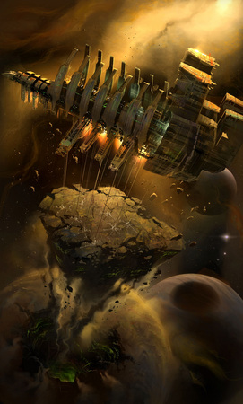
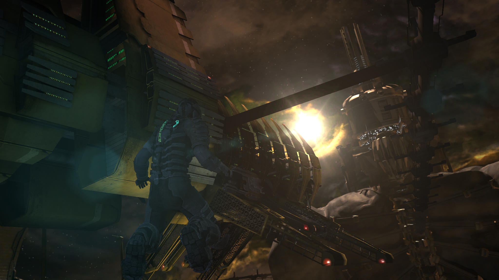
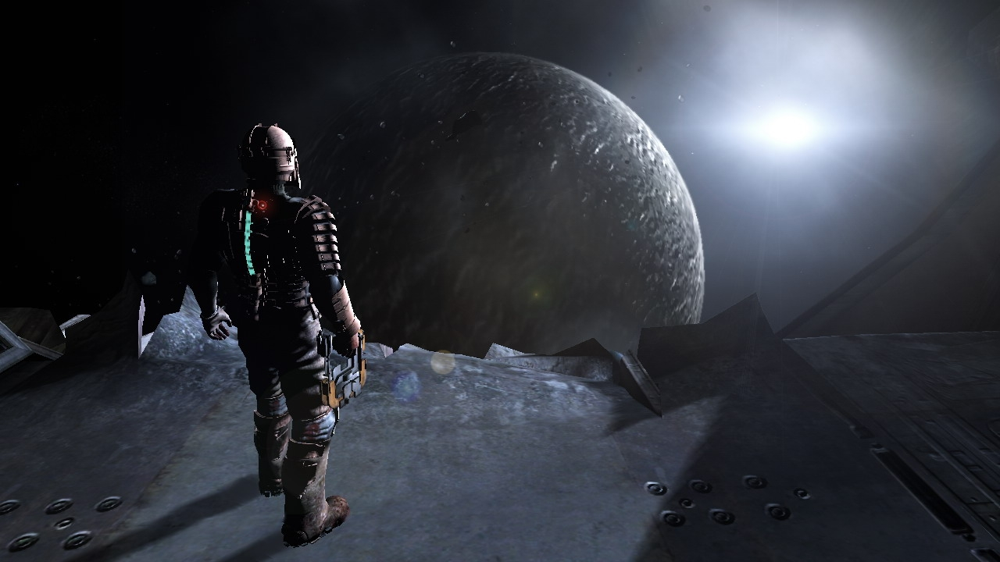
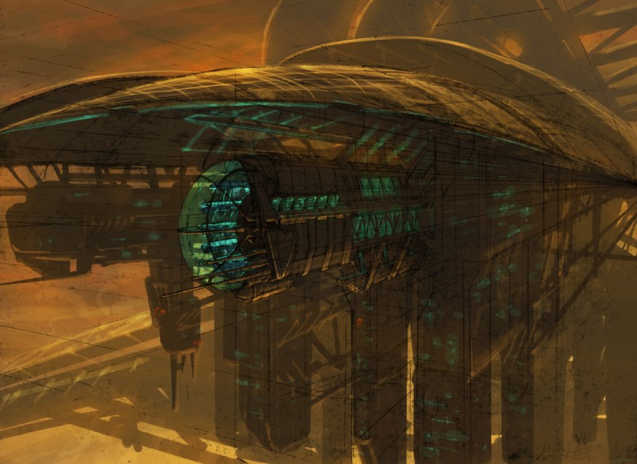
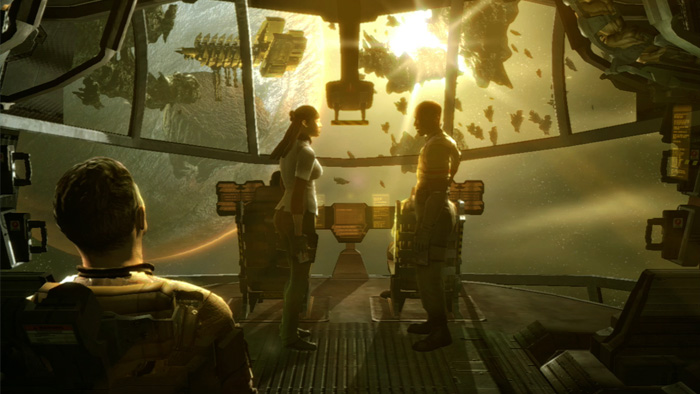
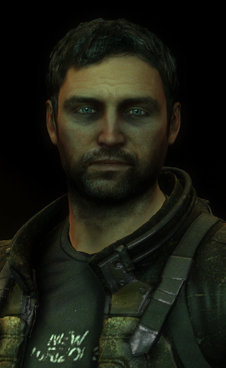
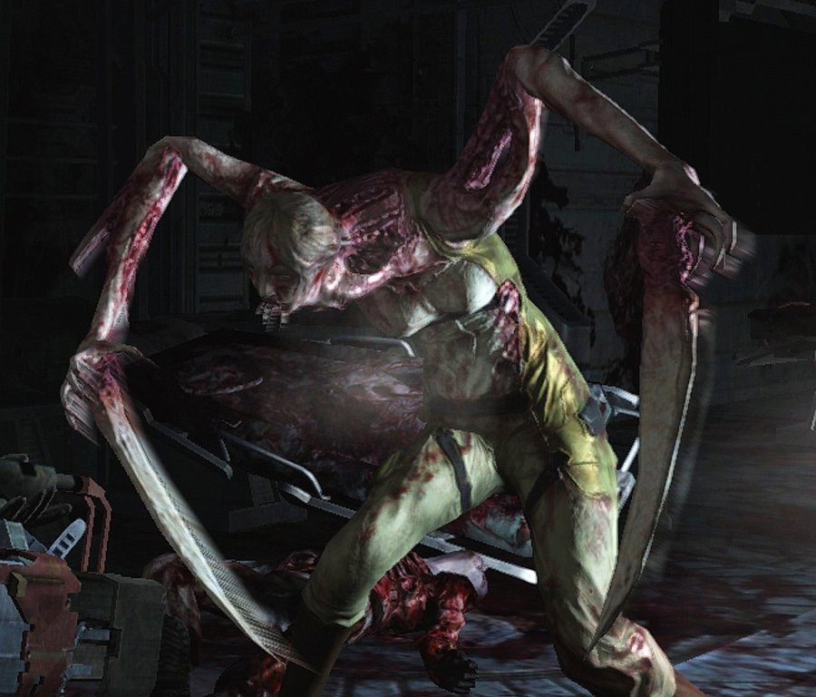
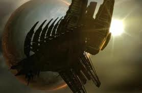

Earth's resources have been stretched thin, so thin to the point of collapse by the constant use of whatever is readily available. Desperate
for survival, a mining company named the Concordance Extraction Corporation, saves the day by building a vast mining ship called
the USG Ishimura

Y 2448
Ever since its launch the Ishimura has brought back rare resource after rare resource, helping to boost the human population and save it from
extinction, but also boosting the economy and agriculture, making the CEC one of the most influential company's on Earth.

Y 2448
At one point, the Ishimura discovers a planet rich in minerals and other resources in which Earth could use, but a scan of the planet shows that it would be unsafe
to venture any further onto it. The planet's name is Aegis VII.

Y 2508
It has now been 60 years since Earth's crises, and thanks to the Ishimura, Earth has not only regained back to its former self, but has increased its wealth
and prosperity.
Y 2509
A distress signal has been sent to the CEC from the Ishimura, which has been sent on a mission to Aegis VII for some odd reason. The CEC sends out
the USG Kellion to investigate. Upon arrival and landing, the crew of the Kellion establish that the Ishimura has been abandoned and that something is
terribly wrong.
Y 2509
Crew member Isaac Clarke, who came on the mission to find his girlfriend who was on the Ishimura at the time of the distress signal being sent, investigates
the Ishimura and splits with the crew of the Kellion, in order to have time to also search for his girlfriend.
Y 2509
Shortly after the Ishimura sensing a disturbance goes into lockdown, this is when the first of the contaminated space monsters, the Necromorfs, come
to feed. Two members of the crew are killed while two more escape to find Isaac.
Y 2509
The remainder of the crew, now reunited, find weapons and attempt to find a way off the Ishimura. Along the way to escaping, members of the remaining crew are
picked off by the Necromorfs, all until Isaac is the only one left.
YR 2509
Isaac finds the cause for all of this horror, in the form of the Hive Mind, a large sentient space monster that controls the Necromorfs and is the cause for the deaths
and destruction of the Ishimura and her crew. Isaac destroys the Hive Mind, finds an esacpe pod and jettisons out into unknown space, with the Ishimura burning in space.